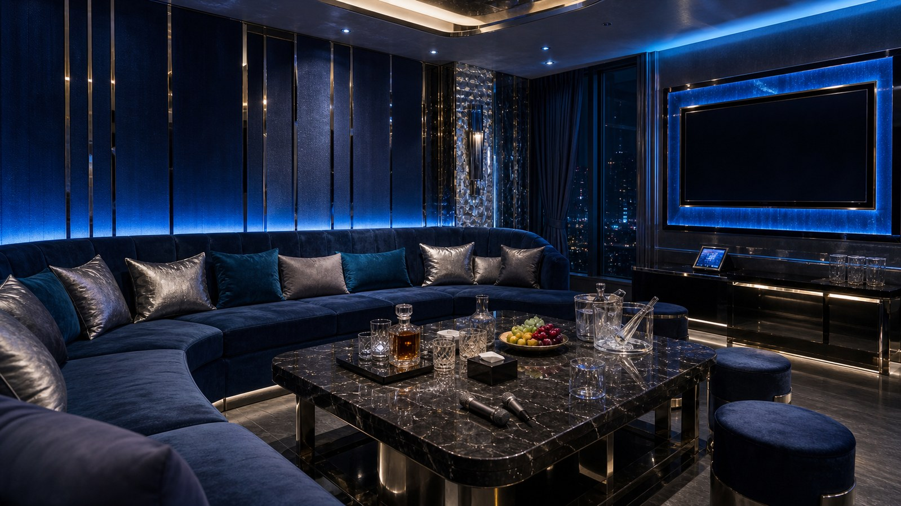
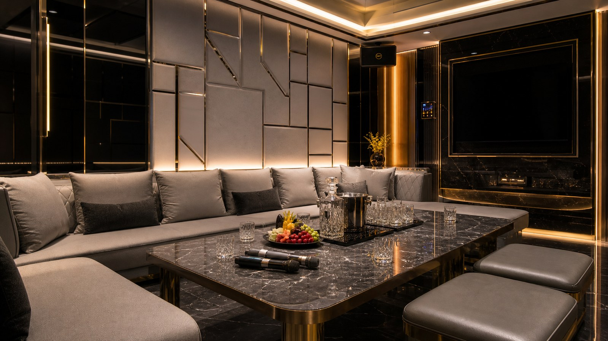

龍亨便服酒店適合什麼安排？
龍亨便服酒店適合小型商務、熟客聚會與低調聊天。若第一次選便服店，可先把預算、人數與偏好氣氛告訴幹部。 如果是第一次比較台北酒店，先把人數、氣氛、交通和預算放在同一張表裡看。 常見適合情境可以先看：低調私人聚會、安靜聊天或商務談話、重視隱私的熟客安排。
龍亨便服酒店適合小型商務、熟客聚會與低調聊天。若第一次選便服店，可先把預算、人數與偏好氣氛告訴幹部。
龍亨便服酒店適合查便服酒店地址的人。 頁面標示區域為 台北市區，實際集合地點請預約確認；地址或集合資訊為：公開頁面未列完整地址，預約時確認集合地點、入口與樓層。
便服店重視低調、自然聊天、隱私與成熟感，適合不想要太舞台化的聚會。 包廂費約 NT$ 3,500 起、人頭費約 NT$ 500／人、服務費約 NT$ 1,000／包、檯費約 NT$ 2,500／60 分鐘；酒水、指定、加時與刷卡費可能另外計算。 預約前建議把人數、抵達時間、預算和想要的現場節奏先講清楚。
| 分類 | 便服店／禮便服店 |
|---|---|
| 區域 | 台北市區，實際集合地點請預約確認 |
| 地址／地點 | 公開頁面未列完整地址，預約時確認集合地點、入口與樓層 |
| 營業時間 | 晚間營業，請預約確認 |
| 包廂費估算 | NT$ 3,500 起 |
| 人頭費估算 | NT$ 500／人 |
| 服務費估算 | NT$ 1,000／包 |
| 檯費估算 | NT$ 2,500／60 分鐘 |
| 基本時間 | 120 分鐘起 |
| 方案備註 | 包廂桌面、服務人員；酒水多依店家酒單另計 |
依公開網路名單與消費資訊整理，實際營業狀態、價格與包廂安排以預約確認為準。
龍亨便服酒店適合小型商務、熟客聚會與低調聊天。若第一次選便服店，可先把預算、人數與偏好氣氛告訴幹部。 如果是第一次比較台北酒店，先把人數、氣氛、交通和預算放在同一張表裡看。 常見適合情境可以先看：低調私人聚會、安靜聊天或商務談話、重視隱私的熟客安排。
龍亨便服酒店頁面標示區域為 台北市區，實際集合地點請預約確認；地址資訊為：公開頁面未列完整地址，預約時確認集合地點、入口與樓層。若同行有人晚到，最好提前確認集合方式，避免到現場才互相等人。
和制服店相比，便服店通常更沉穩；和禮服店相比，互動感更自然，壓力也比較小。 如果同行很重視熱鬧遊戲或強烈主題感，制服店可能更合拍。 比較時可搭配「龍亨便服酒店、台北便服店推薦、便服店地點、便服店地址、中山區便服店、便服店隱私、台北便服店」一起看，重點放在場合、人數與預算是否一致。
Search Notes
找 龍亨便服酒店 時，可以搭配 龍亨便服酒店、台北便服店推薦、便服店地點、便服店地址、中山區便服店、便服店隱私、台北便服店。這些字不是硬塞關鍵字，而是把店名、店型、地點、消費與預約需求放在同一頁說清楚。
便服酒店型態，適合熟客、小型商務與低調聚會。 便服店重視低調、自然聊天、隱私與成熟感，適合不想要太舞台化的聚會。 營業資訊目前寫作：晚間營業，請預約確認，營業狀態請預約確認。
適合喜歡成熟、低調、安靜、不想太舞台化的客人。若同行成員不喜歡太吵，或希望有比較自然的聊天節奏，便服店通常會是更穩的選擇。 若同行需求和這段不一致，預約前就先說明，幹部才比較好避開不合適的安排。
包廂費約 NT$ 3,500 起、人頭費約 NT$ 500／人、服務費約 NT$ 1,000／包、檯費約 NT$ 2,500／60 分鐘；酒水、指定、加時與刷卡費可能另外計算。 預約時可先說明是否重視安靜包廂、低調進出、商務談話或熟客接待。消費前請確認帶台、訪台、指定、基本檯制、酒水與包廂桌面費的算法。
搜尋便服店地址時，建議把集合方式、樓層、停車與低調進出一起問清楚。 龍亨便服酒店屬於便服店／禮便服店類型，適合先依「人數、時間、預算、想要熱鬧或安靜」來判斷是否合適。預約時可以直接把需求傳給台北夜總會俞右，再依當日店況、包廂、人力與預算安排。
如果你是透過「龍亨便服酒店、台北便服店推薦、便服店地點、便服店地址、中山區便服店、便服店隱私、台北便服店」找到這頁，建議把頁面資訊轉成三個實際問題：地點是否方便、費用是否符合人數、現場節奏是否適合這次聚會。龍亨便服酒店目前頁面標示區域為 台北市區，實際集合地點請預約確認；地址或集合資訊為：公開頁面未列完整地址，預約時確認集合地點、入口與樓層。
龍亨便服酒店適合搜尋便服店地址與低調聚會的人。這頁的判斷點是進出方式、包廂舒適度和聊天節奏。
如果你在比較王牌、101、名亨這類便服店，龍亨可以當作重視隱私的參考。預約前先說明同行是否不喜歡太吵。
公開資料和實際可訂狀態可能有落差，因此查完頁面後，仍要用預約確認入口、樓層和當天包廂。
安排 龍亨便服酒店 前，先把日期、抵達時間、人數、預算上限和想要的氣氛講清楚，才不會只用店名猜現場感。
包廂費約 NT$ 3,500 起、人頭費約 NT$ 500／人、服務費約 NT$ 1,000／包、檯費約 NT$ 2,500／60 分鐘；酒水、指定、加時與刷卡費可能另外計算。 正式金額仍要依預約確認與現場規定為準。
便服酒店型態，適合熟客、小型商務與低調聚會。 下面幾點整理的是這間店比較需要先看的差異，不只是把同一套店型說明換成店名。
龍亨便服酒店適合查便服酒店地址的人。
重點是低調進出與包廂舒適度。
可和王牌、101、名亨一起比較。
若同行重視隱私，先把需求說清楚。
Media
這組照片著重包廂座位、桌面細節與空間比例，方便預約前先抓聚會氛圍。




Related
王牌巴塞隆納便服酒店走便服與低調接待路線，適合熟客、小型商務與不想太高調的聚會。預約時可先說明偏好安靜或熱鬧。

101酒店偏禮便服與會所型態，適合重視隱私、包廂品質與低調氣氛的客人。建議先確認是否有適合人數的包廂。

名亨禮便服會館主打禮便服接待，適合松江南京周邊、商務聚會與低調安排。預約前建議確認帶台、訪台或指定方式。
龍亨便服酒店常見分類為便服店／禮便服店。可以先用「台北便服店推薦、便服店地址、便服店地點」這類關鍵字一起比較，再看地點、預算與聚會目的是否合適。
龍亨便服酒店地點可先看 台北市區，實際集合地點請預約確認；地址資訊為：公開頁面未列完整地址，預約時確認集合地點、入口與樓層。實際集合點、入口、樓層與包廂安排建議預約時再次確認。
包廂費約 NT$ 3,500 起、人頭費約 NT$ 500／人、服務費約 NT$ 1,000／包、檯費約 NT$ 2,500／60 分鐘。正式金額仍要依預約確認與現場規定為準。 若有酒水、指定、加時或特殊安排，費用會再變動。
可以，但第一次建議先請幹部說明基本時間、包廂費、人頭費、服務費、檯費與酒水。節奏通常較穩，適合想好好聊天、重視隱私與舒適度的客人。
Reservation
提供台北制服店、林森北酒店、台北禮服店、便服店與男模會館預約諮詢。請先提供日期、時間、人數、預算與偏好店型。